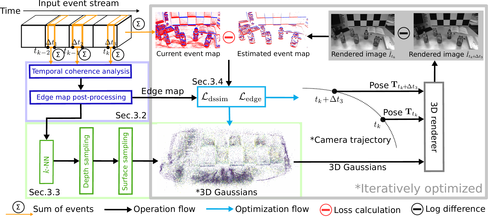

for Pose-Free 3D Reconstruction
1Urban Robotics Lab, School of Electrical Engineering, KAIST
*Corresponding author · {dbstn1121, cs1032, ds.hong, hmyung}@kaist.ac.kr
Abstract
E2EGS is a fully pose-free 3D reconstruction framework operating solely on event streams, using edge information extracted via patch-based temporal coherence analysis to achieve superior trajectory estimation and high-quality novel view synthesis — without any depth models or auxiliary sensors.
Patch-based temporal coherence analysis — a noise-resistant edge detection method that exploits consistent temporal signatures of edges across consecutive event maps, without expensive trajectory estimation.
Geometry-centric 3D Gaussian learning — edge-aware Gaussian initialization with inverse depth sampling and edge-weighted losses that prioritize geometric constraints over texture matching.
Comprehensive evaluation on synthetic Replica and real-world TUM-VIE datasets, demonstrating superior trajectory estimation and competitive reconstruction quality using event streams alone.
Method
E2EGS builds on 3D Gaussian splatting as the scene representation and follows a SLAM-inspired tracking–mapping pipeline. The system processes event streams in temporal chunks, alternating between tracking (estimating motion for new chunks) and mapping (joint bundle adjustment of trajectories and Gaussians in a sliding window).

Figure 1. Edge-guided reconstruction framework. Our pipeline extracts robust edges from consecutive event maps via temporal coherence analysis, initializes edge-aware 3D Gaussians with inverse depth sampling, and applies edge-guided losses during joint optimization of scene representation and camera trajectory.
Robust Edge Detection via Temporal Coherence Analysis
We exploit that edges generate consistent temporal signatures across consecutive event maps. For each spatial patch, we compute a temporal difference signal (with Gaussian windowing between consecutive maps) and measure its variance. Patches with variance above an adaptive threshold τ are classified as edge regions. A post-processing pipeline (Gaussian smoothing → adaptive thresholding → morphological closing) produces a normalized edge confidence map M ∈ [0,1]H×W. The temporal difference captures edges from both previous and current frames, enabling a self-correction mechanism that removes geometrically inconsistent edges.
Edge-Guided Gaussian Initialization
2D edge points are clustered via a recursive grid-based approach with PCA on local edge orientations. Each cluster produces a 2D edge Gaussian; these are lifted to 3D via inverse depth sampling along viewing rays — concentrating samples at farther distances to enhance observability of rotational motion. Random Gaussians supplement smooth texture-less surfaces. The edge ratio redge ∈ [0.1, 0.3] provides the optimal balance between geometric constraints and surface coverage.
Edge-Guided Optimization
The edge-guided loss spatially weights the photometric reconstruction error by edge confidence: w(x) = 1 + β · M(x), amplifying gradients at geometrically salient boundaries. The total loss combines this with a structural dissimilarity (D-SSIM) term, enabling faster convergence and more accurate depth estimation at object edges throughout tracking and bundle adjustment.
Experiments
We evaluate on the synthetic Replica dataset (room0, room2, office0, office2, office3) and real-world TUM-VIE sequences (1d, 3d, 6dof, desk, desk2). NVS quality is measured by PSNR / SSIM / LPIPS; trajectory accuracy by Absolute Trajectory Error (ATE, RMSE in cm).
| Method | room0 | room2 | office0 | office2 | office3 | ||||||||||
|---|---|---|---|---|---|---|---|---|---|---|---|---|---|---|---|
| PSNR↑ | SSIM↑ | LPIPS↓ | PSNR↑ | SSIM↑ | LPIPS↓ | PSNR↑ | SSIM↑ | LPIPS↓ | PSNR↑ | SSIM↑ | LPIPS↓ | PSNR↑ | SSIM↑ | LPIPS↓ | |
| EvGGS | 17.57 | 0.32 | 0.68 | 11.28 | 0.31 | 0.69 | 14.34 | 0.22 | 0.66 | 14.82 | 0.32 | 0.73 | 15.51 | 0.28 | 0.68 |
| Event-3DGS* | 22.27 | 0.84 | 0.30 | 16.39 | 0.68 | 0.36 | 15.97 | 0.64 | 0.51 | 18.19 | 0.60 | 0.48 | 17.82 | 0.84 | 0.31 |
| IncEventGS | 23.54 | 0.86 | 0.20 | 23.25 | 0.76 | 0.27 | 26.53 | 0.49 | 0.44 | 21.27 | 0.76 | 0.29 | 19.21 | 0.82 | 0.19 |
| IncEventGS† | 19.81 | 0.83 | 0.24 | 22.58 | 0.73 | 0.29 | 27.72 | 0.51 | 0.40 | 24.48 | 0.83 | 0.26 | 20.04 | 0.85 | 0.18 |
| Ours | 23.86 | 0.87 | 0.19 | 23.01 | 0.77 | 0.26 | 28.01 | 0.52 | 0.41 | 24.86 | 0.83 | 0.25 | 20.75 | 0.85 | 0.19 |
| Method | Synthetic — Replica | Real-world — TUM-VIE | ||||||||
|---|---|---|---|---|---|---|---|---|---|---|
| room0 | room2 | office0 | office2 | office3 | 1d | 3d | 6dof | desk | desk2 | |
| DEVO | 0.271 | 0.381 | 0.287 | 0.134 | 0.356 | 0.23 | 1.00 | 1.82 | 0.55 | 0.75 |
| ESVO2 | — | — | — | — | — | 1.08 | 1.51 | 1.49 | 0.89 | 2.65 |
| IncEventGS | 0.051 | 0.071 | 0.085 | 0.041 | 0.058 | 2.19 | 1.62 | 0.70 | 0.15 | 0.41 |
| IncEventGS† | 6.817 | 0.446 | 0.698 | 0.513 | 1.379 | 2.58 | 4.48 | 8.24 | 0.78 | 96.59 |
| Ours | 0.049 | 0.065 | 0.078 | 0.070 | 0.077 | 1.12 | 0.65 | 0.58 | 0.12 | 0.40 |
Bold: best. Underline: second best. † = no depth supervision. * = uses E2VID + COLMAP poses. ESVO2 evaluated on real datasets only.
Qualitative Results
Our edge-guided approach produces sharper boundaries and cleaner surfaces. IncEventGS shows failure modes including wave-like artifacts in texture-less regions, missing fine details, and indistinct object boundaries. IncEventGS† exhibits severe reconstruction failures due to accumulated trajectory errors from random initialization.
Replace placeholder boxes with <img src="static/qual_*.png"> in the HTML.
Video
Citation
If you find our work useful, please consider citing:
@inproceedings{kim2025e2egs,
title = {E2EGS: Event-to-Edge Gaussian Splatting for Pose-Free 3D Reconstruction},
author = {Kim, Yunsoo and Sung, Changki and Hong, Dasol and Myung, Hyun},
booktitle = {Proceedings of the IEEE/CVF Conference on Computer Vision
and Pattern Recognition (CVPR)},
year = {2025}
}